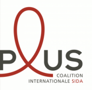
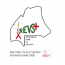
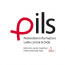
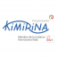
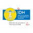
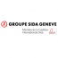
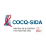
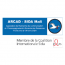
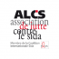
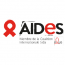

Coalition PLUS intervient dans 35 pays auprès de plus de 60 associations de lutte contre le sida et les hépatites. Elle s'est dotée d'une gouvernance internationale qui réunit 15 ONG dans 15 pays, et de plateformes sous-régionales d'interventions, basées chez les membres. Ses objectifs sont la mise en place de recherches communautaires, le plaidoyer auprès des décideurs nationaux et internationaux, la promotion de la démarche communautaire en santé basée sur l'excellence de gestion et de démocratie.










« A Maurice, le poids des préjugés sur le sida est énorme ! »
Témoignages
En 2014, 322 nouveaux cas de sida ont été répertoriés à l’île Maurice. Rachel Constantin est la secrétaire du conseil d’administration de PILS, une...
« Après 23 ans de lutte, je garde l’espoir que nous pouvons vaincre le VIH... »
Témoignages
L’engagement de Martine Somda dans la lutte contre le VIH/sida au Burkina Faso ne date pas d’hier. Mais pour la présidente de l’association REVS+, une...
« Je ne laisserai pas le sida définir qui je suis »
Témoignages
C’est un portrait un peu particulier que propose aujourd’hui Coalition PLUS. Toujours dans la continuité de la Journée internationale des droits des femmes et de...